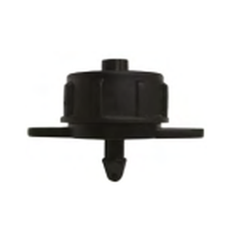
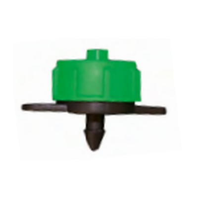
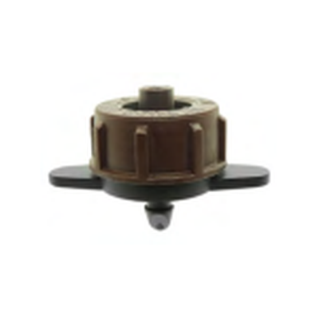
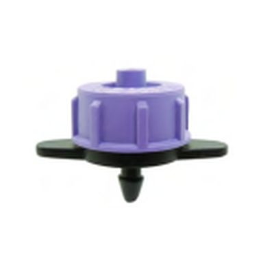
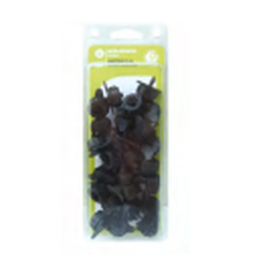
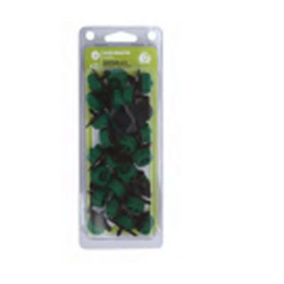

Goutteur & outil montage
Goutteur standard démontable NESTOS
Code famille K09 · Débits 2, 4, 8 et 16 l/h






Le goutteur NESTOS apporte l'eau au pied de chaque plante, goutte à goutte, avec un débit régulier. Démontable, il se nettoie facilement et se réutilise saison après saison.
- Régime turbulent : le passage de l'eau en turbulence limite les dépôts et l'encrassement.
- Démontable : on l'ouvre pour le nettoyer au lieu de le remplacer.
- Code couleur : chaque débit a sa couleur, on identifie le goutteur d'un coup d'œil.
- Montage simple : se pique sur tube 4 x 6 mm, sortie lisse.
- Deux formats : sachet de 100 pour les grandes installations, blister de 25 pour le jardin.
Choisir son débit
Noir · 2 l/h
Vert · 4 l/h
Marron · 8 l/h
Violet · 16 l/h
Débits nominaux mesurés à 1 bar.
Caractéristiques techniques
- Type
- Goutteur standard démontable
- Régime
- Turbulent
- Débit nominal
- 2, 4, 8 ou 16 l/h à 1 bar
- Tube compatible
- 4 x 6 mm
- Sortie
- Lisse
- Plage de pression
- À compléter
- Matière
- À compléter
- Filtration conseillée
- À compléter
Références et tarifs
| Désignation | Débit | Référence | Conditionnement | Colisage | Prix HT | Prix unitaire HT |
|---|---|---|---|---|---|---|
| NESTOS (x100) | 2 l/h | 50NES2S000K | Sachet | 1/50 | 28,87 € | 0,2887 € |
| NESTOS (x25) X02 | 2 l/h | 980108 | Blister | 1/10 | 10,55 € | 0,4220 € |
| NESTOS (x100) | 4 l/h | 50NES4S000K | Sachet | 1/50 | 28,87 € | 0,2887 € |
| NESTOS (x25) X02 | 4 l/h | 980109 | Blister | 1/10 | 10,55 € | 0,4220 € |
| NESTOS (x100) | 8 l/h | 50NES8S000K | Sachet | 1/50 | 28,87 € | 0,2887 € |
| NESTOS (x100) | 16 l/h | 50NES16S00K | Sachet | 1/50 | 28,87 € | 0,2887 € |
Blister X02 accrochable avec code-barres, disponible en 2 et 4 l/h. Prix HT en euros selon catalogue.